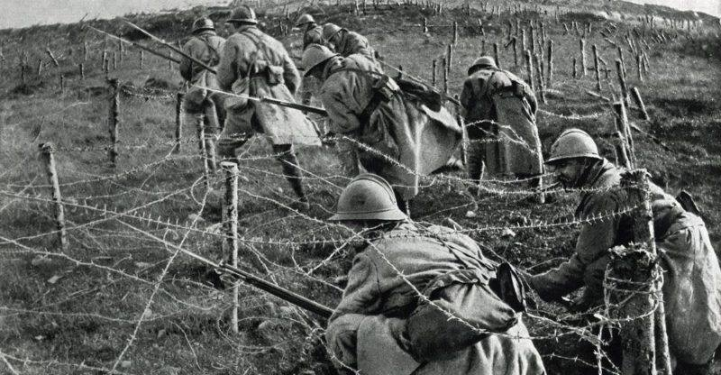

La Primera Guerra Mundial, anteriormente llamada la Gran Guerra, fue una confrontación bélica centrada en Europa que empezó el 28 de julio de 1914 y finalizó el 11 de noviembre de 1918, cuando Alemania aceptó las condiciones del armisticio. Recibió el calificativo de «mundial» porque se vieron involucradas todas las grandes potencias industriales y militares de la época, divididas en dos alianzas. Por un lado, la Triple Alianza formada por las Potencias Centrales: el Imperio alemán y Austria-Hungría. Italia, que había sido miembro de la Triple Alianza junto a Alemania y Austria-Hungría, no se unió a las Potencias Centrales, pues Austria, en contra de los términos pactados, fue la nación agresora que desencadenó el conflicto. Por otro lado se encontraba la Triple Entente, formada por el Reino Unido, Francia y el Imperio ruso. Ambas alianzas sufrieron cambios y fueron varias las naciones que acabarían ingresando en las filas de uno u otro bando según avanzaba la guerra: Italia, el Imperio del Japón y Estados Unidos se unieron a la Triple Entente, mientras el Imperio otomano y el Reino de Bulgaria se unieron a las Potencias Centrales. Más de 70 millones de militares, de los cuales 60 millones eran europeos, se movilizaron y combatieron en la entonces guerra más grande de la historia. Hasta antes del comienzo de la Segunda Guerra Mundial, esta guerra era llamada «Gran Guerra» o «Guerra Mundial», expresión esta última que en Alemania comenzó a utilizarse desde su comienzo (Weltkrieg), aunque solo se generalizó en Francia (Guerre Mondiale) y en el Reino Unido (World War) en la década de 1930, mientras que en Estados Unidos la denominación se impuso a partir de su intervención en 1917, ya que allí se la conocía como «Guerra Europea». Aunque el imperialismo que venían desarrollando desde hacía décadas las potencias involucradas fue la principal causa subyacente, el detonante del conflicto se produjo el 28 de junio de 1914 en Sarajevo con el asesinato del archiduque Francisco Fernando de Austria, a manos de Gavrilo Princip, un joven nacionalista serbio. Este suceso desató una crisis diplomática cuando Austria-Hungría dio un ultimátum al Reino de Serbia y se invocaron las distintas alianzas internacionales forjadas a lo largo de las décadas anteriores. Las revoluciones y los fuertes movimientos nacionalistas del siglo XIX consiguieron anular gran parte de las imposiciones reaccionarias acordadas en Viena.